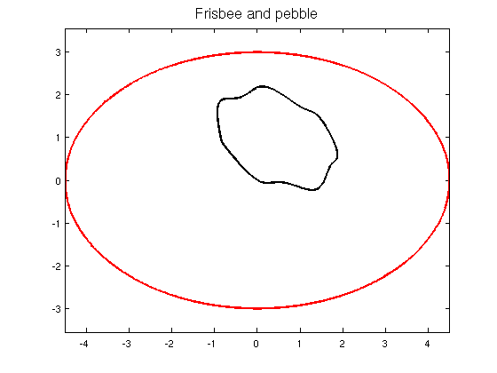
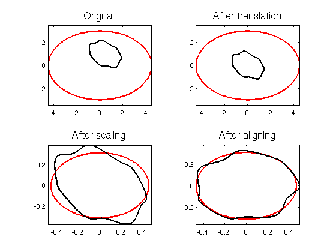
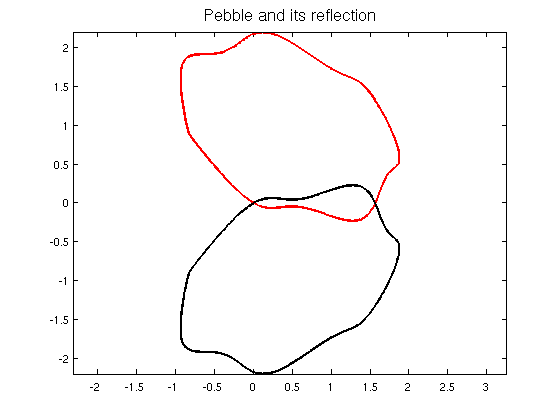
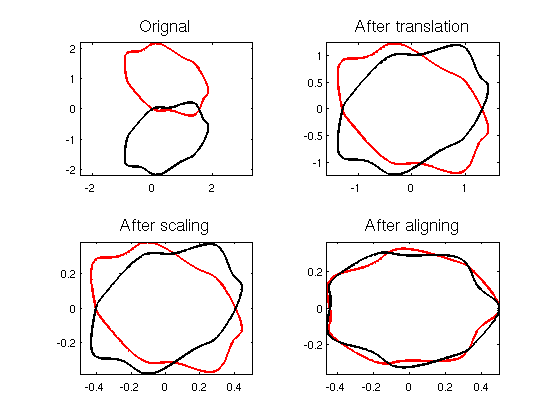

Procrustes shape analysis
Alex Townsend, August 2011
Contents
(Chebfun Example geom/Procrustes.m)
function procrustes
close all
Shape analysis on a beach holiday
Procrustes shape analysis is a statistical method for analysing the distribution of sets of shapes (see [1]). Let's suppose we pick up a pebble from the beach and want to know how close its shape matches the outline of an frisbee. Here is a plot of the frisbee and the beach pebble.
figure(1); t=chebfun('x',[0,2*pi]); f=3*(1.5*cos(t) + 1i*sin(t)); %frisbee g=exp(1i*pi/3)*(1+cos(t)+1.5i*sin(t)+ .125*(1+1.5i)*sin(3*t).^2); %pebble plot(f,'r','LineWidth',2), hold on, axis equal, plot(g,'k','LineWidth',2); title('Frisbee and pebble','FontSize',16); hold off;
Two shapes are equivalent if one can be obtained from the other by translating, scaling and rotating. Before comparison we thus:
1. Translate the shapes so they have mean zero.
2. Scale so the shapes have Root Mean Squared Distance (RMSD) to the origin of one.
3. Rotate to align major axis.
Here is how the frisbee and the pebble compare after each stage.
function [f,g]=ShapeAnalysis(f,g) % SHAPEANALYSIS(F,G) Plots the parameterised curves before and after % each stage of translating, scaling and aligning. Outputs are % parameterised curves ready for Procustes shape analysis. LW = 'LineWidth'; FS = 'FontSize'; % Plot orignal subplot(2,2,1) plot(f,'r',LW,2), hold on, axis equal, plot(g,'k',LW,2) title('Orignal',FS,16) % Translate mean to 0. f = f-mean(f); g = g-mean(g); subplot(2,2,2) plot(f,'r',LW,2), hold on, axis equal, plot(g,'k',LW,2) title('After translation',FS,16) % Scale so RMSD is 1. f = f/norm(f); g = g/norm(g); subplot(2,2,3) plot(f,'r',LW,2), hold on, axis equal, plot(g,'k',LW,2) title('After scaling',FS,16) % Align major axis. subplot(2,2,4) % Find argument of major axis. [~,fxmax]=max(abs(f)); [~,gxmax]=max(abs(g)); rotf=angle(f(fxmax)); rotg=angle(g(gxmax)); % Rotate both so major axis lies on the +ve real axis. x = chebfun('x',[0,2*pi]); f = exp(-1i*rotf)*f(mod(x+fxmax,2*pi)); g = exp(-1i*rotg)*g(mod(x+gxmax,2*pi)); plot(f,'r',LW,2), hold on, axis equal, plot(g,'k',LW,2) title('After aligning',FS,16), hold off end [f,g] = ShapeAnalysis(f,g);
To calculate the Procrustes distance we would measure the error between the two shapes at a finite number of reference points and compute the vector 2-norm. In this discrete case In Chebfun we calculate the continuous analogue:
norm(f-g)
ans = 0.072347575424997
A little warning
In the discrete version of Procrustes shape analysis statisticians choose reference points on the two shapes (to compare). They then work out the difference between corresponding reference points. The error computed depends on this correspondence. A different correspondence gives a different error. In the continuous case this correspondence becomes the parameterisation. A different parameterisation of the two curves gives a different error. This continuous version of Procrustes (as implemented in this example) is therefore more of an 'eye-ball' check than a robust statistical analysis.
A shape and its reflection
At the beach shapes reflect on the surface of the sea. An interesting question is: How close, in shape, is a pebble to its reflection? Here is a plot of a pebble and its reflection.
figure(2) % pebble f = exp(1i*pi/3)*(1+cos(t)+1.5i*sin(t)+.125*(1+1.5i)*sin(3*t).^2); % reflection g = exp(-1i*pi/3)*(1+cos(2*pi-t)-1.5i*sin(2*pi-t)+.125*(1-1.5i)*sin(3*(2*pi-t)).^2); plot(f,'r','LineWidth',2), hold on, axis equal, plot(g,'k','LineWidth',2) title('Pebble and its reflection','FontSize',16), hold off
Here is how the pebble and its reflection compare after each stage of translating, scaling and rotating.
[f,g]=ShapeAnalysis(f,g);
Now we calculate the continuous Procrustes distance.
norm(f-g)
ans = 0.097593759012228
Comparing this result to the Procrustes distance of the pebble and a frisbee shows that the pebble is closer in shape to a frisbee than its own reflection!
end